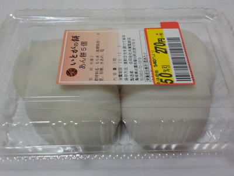
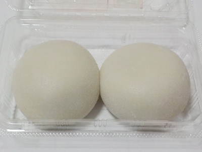
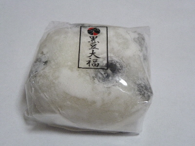
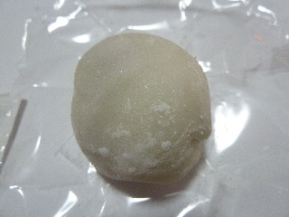
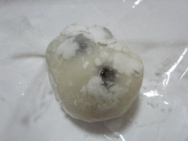
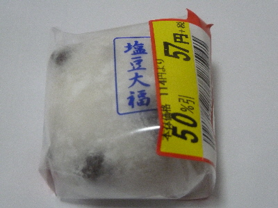
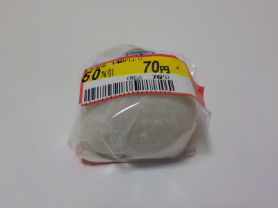
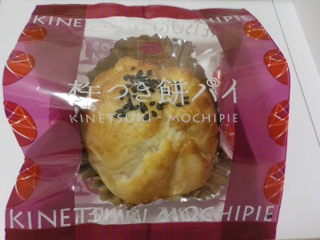
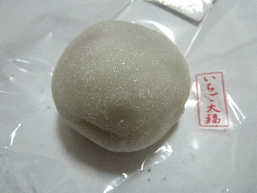
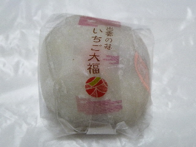

島根県出雲市斐川町荘原1175番地3
更新日 : 2026/02/07

斐川町のお餅屋さんの餡餅です。大福とか和菓子系のお餅は食べますが、普通の餡餅を食べるのは久しぶりな気がします。
イベント等に行くとお餅の販売をよく見かけますが、今年はコロナであまり出かけていないので、食べる機会がありませんでした。
普通にお餅なので、食べ応えがありました。食べてる時は美味しいので気にならないですが、食後の満足感がありました。
2020/12/03 冬場は焼いて、熱々スイーツになっていいですね。

2026/02/07 まるまるとしていて美味しそうですね。2個入り半額で160円でした。物価が上がったので通常価格でもコンビニおにぎりよりお買い得かも。
更新日 : 2017/08/09

四角い大福ですね。なんか四角い大福も見慣れて、普通に思えるようになりました。
餡子が甘すぎないのと、お餅が多目だったので、お餅味がよく分かりました。
大福って感じです。お餅って美味しいなーって思いながら食べました。
お餅に気をとられてしまったので、黒豆の味は印象にのこりませんでした。
更新日 : 2014/02/06

苺大福みたいに、真ん中にドーンと栗が入ってるかと思ったら違ってました。
餡と栗がほどよく混ざって、ホクホクでマイルドな味の大福でした。
ゆめタウンいずもで買いました。
更新日 : 2018/06/21

甘くない大福ってあるんですね。
大福なんだから甘いと思っていました。で、豆やアンに塩味がプラスしてあるかと想像してました。
でもこれはアンが甘くなかったです。ちょっと衝撃的。塩味のアンだ。
2014/02/06 こうゆう大福もあるんですね。勉強になりました。

2018/06/21 大福が四角くなっていました。

2021/05/10 ゆめタウン出雲で半額の大福を買いました。丸くなりましたね。
更新日 : 2021/10/31

パッケージの裏に、レンジ等で温めて食べる方法があったので、チンして食べました。
チンするといいですね。温かくて柔らかくていい香りです。美味しくいただけました。
2013/11/06 斐川町の道の駅で販売していたものです。
2021/10/31 マックスバリュで買いました。期待通りの味でした。
更新日 : 2012/03/05
HOK塩冶店でみつけました。夕方買ったので、値引きされていました。

お餅大目の大福ですね。アンや苺が透けて、赤かったり、黒かったりする苺大福ですが、これは白くて綺麗です。
アンが少な目で、甘さ控えめですが、お餅が多めなので、ボリュームがありました。
2011/01/11 お店の名前はもみじでした。

2012/03/05 包装に「出雲の苺」って書いてありますが、この苺が甘くてとっても美味しかったです。
【おいしいものを食べよう。】【たくさん寝よう。】
【ソロ活をしよう!】【季節感のあることをしよう。】【動画視聴はほどほどに。】【当サイトの全てのコンテンツは無断転載禁止です。】